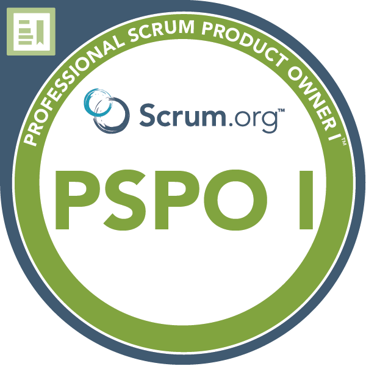
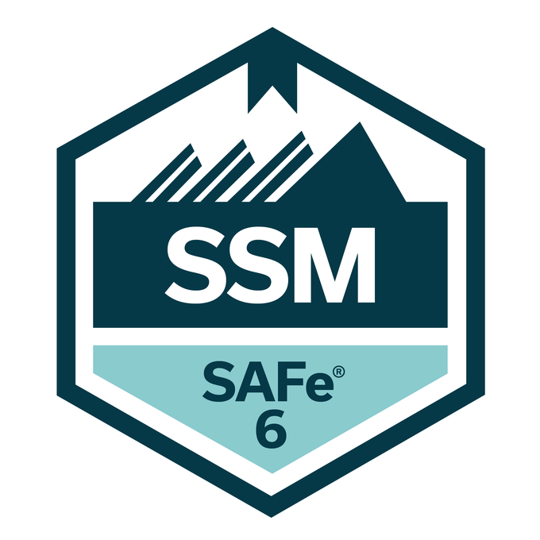
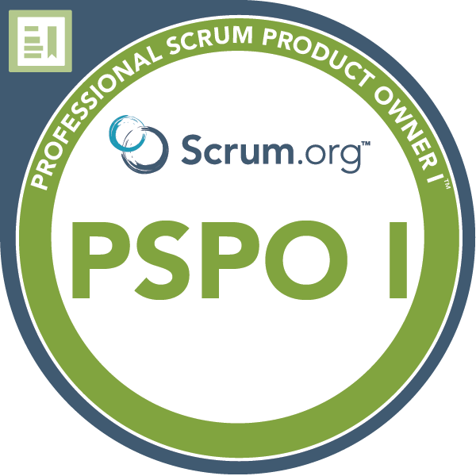
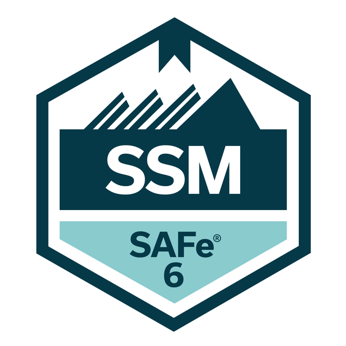

Education
Grad. Cert. – Project Management
Algoma University (2023–2024)
M.Sc. Biotechnology
Bharathidasan University (2010–2012)
Certifications
PSM-I
PSPO-I
SAFe SM
Work Experience
Scrum Master – Vosyn
Mar 2025 – Present | Remote (Ontario, Canada)- Facilitated Scrum for 6 ML + 2 cloud engineers on AI voice-cloning sprint.
- Planned XTTS fine-tuning, RVC optimization & deployment schedules.
- Aligned stakeholders on model release progress with Jira & Confluence.
Tools: Jira, Confluence, GCP, Python
Outcome: Scalable AI voice platform delivered successfully.
Project Manager / Scrum Master – Ploutos IT Consulting
Aug 2024 – Present | Remote (Canada)- Led data engineers, analysts & BI devs in Agile execution.
- Oversaw ETL, data modeling & dashboard build sprints.
- Ensured smooth data flows & governance across pipelines.
Tools: Azure DevOps, Jira, Power BI
Outcome: Increased data visibility & cut delivery delays.
Quality Team Manager / Scrum Master – IKS Health
Feb 2021 – Dec 2022 | Hyderabad, India- Led cross-functional teams of 10 to deliver healthcare IT solutions.
- Improved backlog quality and sprint delivery through Agile coaching.
- Enabled consistent sprint success and team autonomy.
Tools: Jira, Confluence
Outcome: Enhanced team productivity & delivery quality.
Team Lead & Scrum Master – Sutherland Healthcare Solutions
Mar 2016 – Feb 2021 | Hyderabad, India- Championed Scrum adoption & coach across multiple teams.
- Fostered self-organization, reducing supervisor oversight.
- Boosted sprint completion by 15% via iterative retrospectives.
Tools: Jira, Confluence
Outcome: Strengthened Agile culture & delivery reliability.
Azure Administrator – e4e
Aug 2014 – Jan 2016 | Chennai, India- Provisioned Azure resources for EMR across dev/test/prod.
- Implemented HIPAA‑aligned policies to ensure data compliance.
- Optimized infrastructure costs through monitoring.
Tools: Azure Portal, ARM Templates
Outcome: Maintained reliable & cost-effective EMR infrastructure.
Medical Coding Analyst – UnitedHealth
Jul 2013 – Aug 2014 | Hyderabad, India- Assigned ICD‑10/CPT/HCPCS codes & validated chart accuracy.
- Improved documentation via audits and feedback loops.
Outcome: Raised coding accuracy and reduced errors.
Sr. Medical Records Coder – Dell
Aug 2012 – Jul 2013 | Hyderabad, India- Assigned ICD‑10/CPT/HCPCS & mentored coding staff.
- Led audits for compliance and training initiatives.
Outcome: Ensured accurate coding and streamlined workflows.
Featured Projects
AI‑Powered Portfolio
Built a self-driven, AI-enhanced portfolio with HTML, CSS & automated taglines.
View Live →Agile Template Published
Featured in Notion’s gallery for enabling Agile Kanban workflows.
Explore Template →Gmail API Assistant
Python tool that fetches latest 10 emails via OAuth, tracked with Jira/Confluence.
Read the Story →Kanban Transformation
Implemented a 2-tier Kanban process to improve cross-team visibility and unblock flows:
- Portfolio-level dashboards with swimlanes
- Increased transparency via Jira & Confluence
Outcome: 25% faster issue resolution and stronger team coordination.
Contact Information
| Name | Phone | Licenses | |
|---|---|---|---|
| Karthik Marupaka | karthikoct13@gmail.com | 905‑783‑8689 | PSM‑I, PSPO‑I, SAFe SM, SSM, AZ‑900, Jira Fundamentals, PMP |
| Connect on LinkedIn | |||